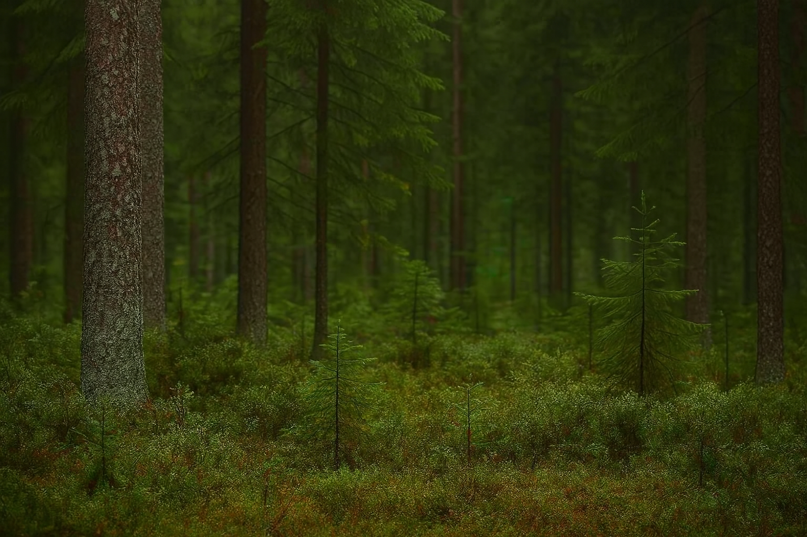
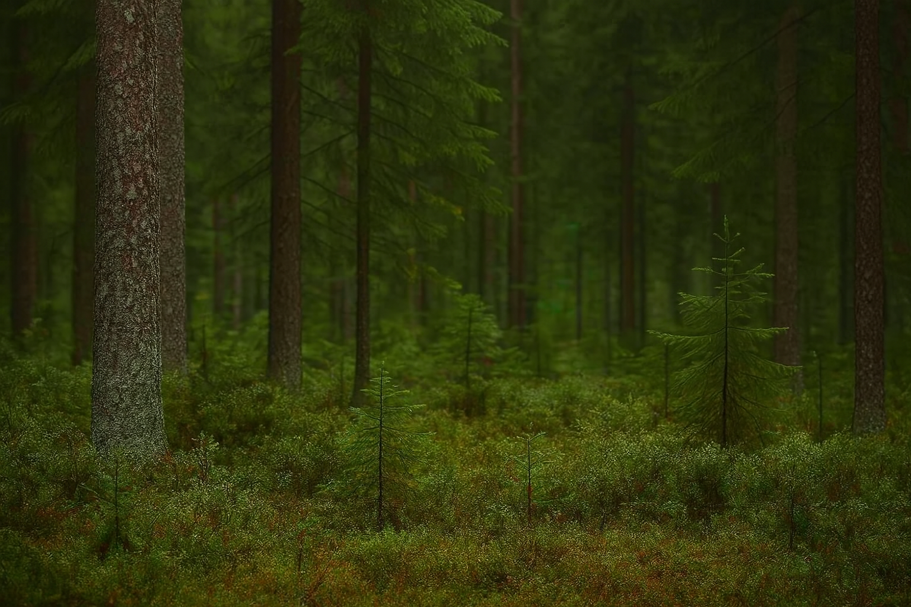
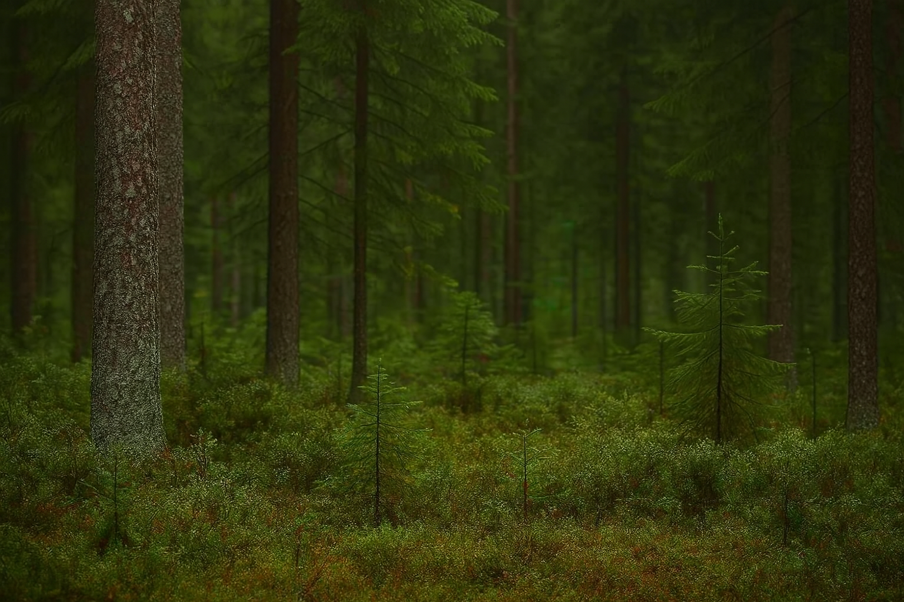
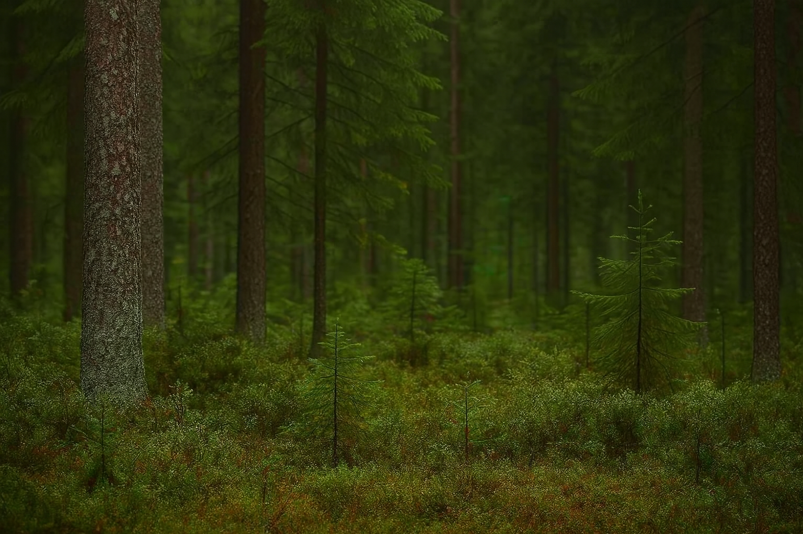

Wie wir alle hoffentlich wissen, ist der Name dieses Bären "Braunbär". Den lateinischen Namen, jedoch kennen nicht alle, auf Latein heisst er "Ursus arctos". Er gehört zur Klasse der Säugetiere. Die Grösse eines ausgewachsenen Braunbären kann bis zu 2,6m betragen. Braunbären werden zwischen 400 und 800kg schwer. Mit einem Höchstalter zwischen 20 und 30 Jahren wird der Braunbär sehr alt. Sein hell- bis dunkelbraunes Fell hilft ihm bei der Tarnung im Wald. Der Braunbär isst alles, er ist ein Allesfresser auf Latein omnivor. Zu seiner Nahrung zählen Aas, Beeren, Blätter, Fisch, Gräser, Insekten und Nagetiere. Der Braunbär ist in Russland, in den USA und in Kanada verbreitet. Am häufigsten kommt er in Russland vor, von dort stammt er auch ursprünglich. Er lebt in Laub- und Nadelwäldern.
| Name | Lateinischer Name | Klasse | Grösse | Gewicht | Alter | Aussehen | Ernährungstyp | Nahrung | Verbreitung | Lebensraum |
|---|---|---|---|---|---|---|---|---|---|---|
| Braunbär | Ursus arctos | Säugetiere | bis zu 2,6m | 80kg - 780kg | 20 - 30 Jahre | hell- bis dunkelbraunes Fell | Allesfresser (omnivor) | Aas, Beeren, Blätter, Fisch, Gräser, Insekten, Nagetiere | Russland,USA,Kanada | Laub- und Nadelwälder |